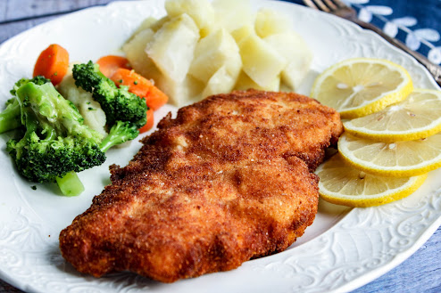

Austrian Schnitzel (With Chicken) Recipe
Home

Description
Golden and crispy outside, tender and juicy inside—chicken schnitzel is a weeknight favorite for kids and adults alike!
Most commonly made with pork or veal, this recipe switched to chicken.
Don’t forget the lemon wedges!
Lemon is delightful squeezed onto the finished schnitzel.
Traditionally, we would serve the dish with potatoes and tangy cooked red cabbage.
You will often find it served with fries.
Either way, it is a satisfying, tasty dish that you will want to make again soon.
Ingredients
- 4 boneless skinless chicken breasts
- 1/2 cup all-purpose flour (or more as needed for coating)
- 2 eggs, beaten
- 1 Tbsp oil
- 1/4 cup olive oil
- 1 cup bread crumbs (up to 2 cups)
- 1 tsp paprika
- Salt and pepper, to taste
- lemons, quartered
Steps

- Butterfly chicken breasts

- Dredge in flour, then set aside

- Combine eggs, 1 tablespoon oil, paprika, salt, and pepper; mixing well

- Dip floured chicken breasts in egg mixture, then immediately into bread crumbs, coating everything

- Heat 1/4 cup oil in a large skillet. Cook Chicken breasts until lightly browned on one side, then flip; 3 to 4 minutes a side

- Drain on paper towels while cooking the rest
- Serve hot with red cabbage and mashed potatoes, or with french fries.
- Garnish with lemon wedges to squeeze on the schnitzel. Enjoy!